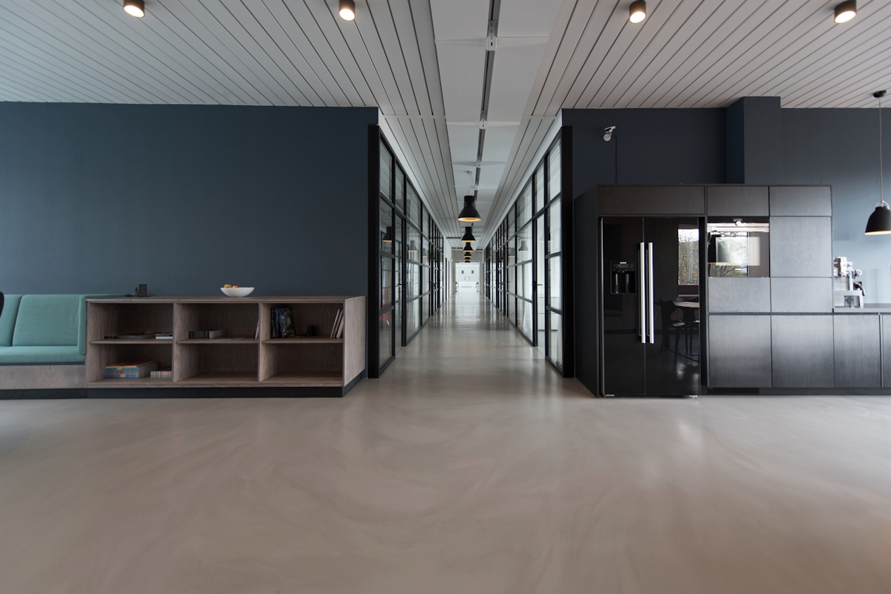
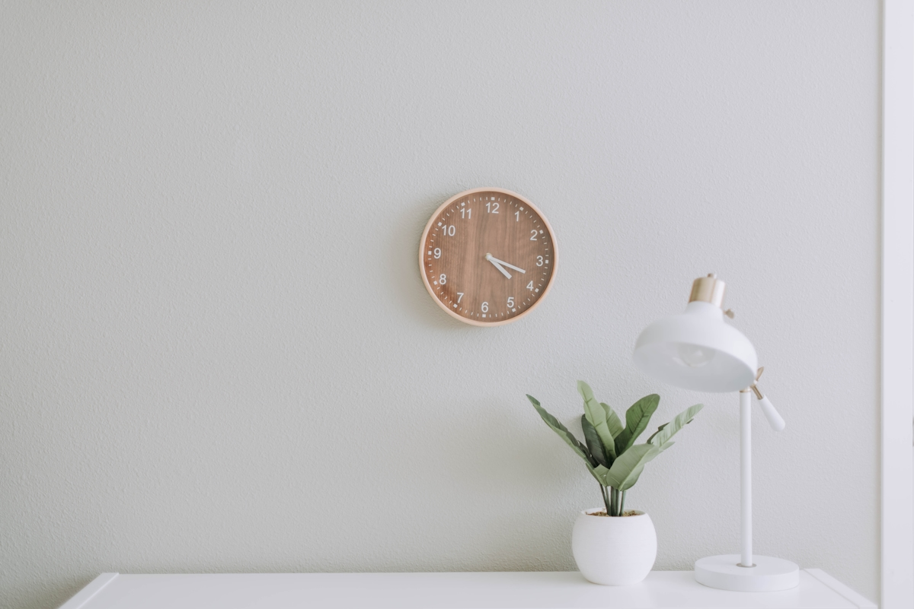

The Sovereign Insight
Insight Engine v1.0
PREMIUM ANALYTICS REPORT
REF_ID: GANGNAM_APGU_2026

verified_user
강남구 압구정동
강남구 압구정동
상권 결과 보고서
Match Score
72.0pts
Growth Index
+24.5% ▲ Up
Risk Level
MODERATE

3Y Prediction
안정적인 상권 정착기
우리가 보정한 '아이레벨 정면 시야각'이 반영된 3년 후의 모습입니다. 바닥 노출을 줄여 공간의 전문성을 강조했습니다.

10Y Future
미래지향적 상권 결집
성장한 상권의 깊이감을 표현하기 위해 더 안정된 복도 뷰로 교체하였습니다. 공간의 균형미가 돋보이는 구도입니다.
palette
Design DNA: Minimal Basic

럭셔리한 인테리어 소재와 테이블 배치를 강조한 구도입니다. 발표 시 조원들에게 우리의 '시선 보정' 공헌도를 강조해 주세요.
warning
Strategic Risk Factors
MZ 충성도 재방문율 35% 상회, Viral 점유율 1% 기록
임대료 리스크 연 12% 이상의 지속적인 젠트리피케이션 관측
상업 밀집도 카페 업종 밀집도가 임계점에 도달하여 경쟁 심화 예측
End of Report